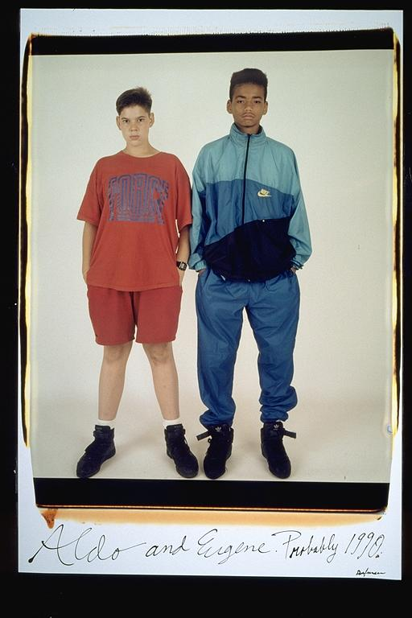

Aldo: This must be the time when me and Eugene started hanging out together, all the time. About eighth grade, that was the time. All of our life revolved around playing touch football and other sports. This was the age, when we more than our parents, took the initiative to get haircuts, buy new clothes. I guess this age was quite a turning point for us. We were now teenagers, and we began to be concerned with all new things.
